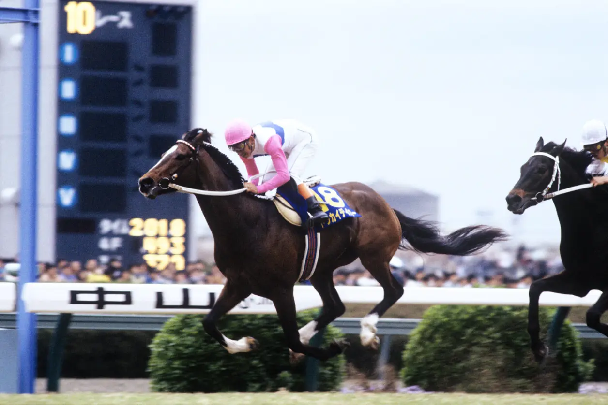

角色简介
东海帝皇 (Tokai Teio)
东海帝皇是赛马娘中极具人气的角色，以其标志性的蓝色长发和白色制服闻名。 她拥有着永不放弃的精神，即使在多次受伤的情况下依然坚持重返赛场， 展现了真正的赛马娘精神。
性格特点
- 出众的判断力与才能：拥有卓越的赛场洞察力和天赋
- 开朗快活：性格阳光，总是充满活力
- 单纯自信：从不怀疑自己会成为第一名，是个纯粹的自信家
- 奔放性格：这种开朗的性格深受大家喜爱
成长动力
憧憬着学生会会长"皇帝"鲁道夫象征，因此从小就立志参加比赛， 以成为像她一样优秀的赛马娘为目标不断努力。
独特技能
帝王舞步：独特的柔软步法，在赛场上展现出优雅而高效的奔跑姿态。
角色经历
憧憬"皇帝"鲁道夫象征
从小憧憬着"皇帝"鲁道夫象征的辉煌，以"无败的三冠马娘"作为自己的目标。
新人赛马娘出道
以出色的天赋和潜力在特雷森学园崭露头角，展现出非凡的奔跑才能。
经典三冠赛事
先后获得皋月赏和日本德比冠军，正处于意气风发之时，以不败战绩高歌猛进。
首次骨折与菊花赏缺席
德比之后查出骨折，虽努力恢复但未能参加菊花赏，无缘三冠。在观看菊花赏后重新振作。
大阪杯复出与春季天皇赏
于大阪杯复出并轻松夺胜，但在春季天皇赏上败给好友目白麦昆，赛后再次骨折。
梦想破碎与自我怀疑
继三冠之后不败也未能实现，数次的梦想破碎让帝王陷入迷茫，有马纪念大败。
第三次骨折与退队危机
训练中第三度骨折，被诊断为习惯性骨折，心灰意冷决定从Spica退队。
双涡轮的激励与重新振作
在学园祭上看到双涡轮的拼搏精神，在众人鼓励下决定再努力一次。
与麦昆的夕阳约定
在万圣节约会中向麦昆表达感谢，两人约定以后要继续一起奔跑。
有马纪念的奇迹复活
得知麦昆患病后，决意参加有马纪念证明奇迹存在，最终奇迹复活夺冠，创造最长修养期GI胜利纪录。
原型马

トウカイテイオー (Tokai Teio)
万众瞩目的降生
作为传奇赛马"皇帝"鲁道夫象征最有名的子嗣，东海帝王从出生开始就被所有人期待着。小名是滨之帝王（ハマノテイオー），取自出生的长滨牧场和父亲鲁道夫象征的绰号"皇帝"。
传奇母系血脉
母系源自下总御料牧场引进的繁殖母马之一"星友"。星友产出了首次作为母马斩获日本德比的ヒサトモ（久友），这支母系经历了多次濒临灭绝的危机，最终在内村正则的努力下得以延续。
机缘巧合的诞生
原本预定是东海罗曼与鲁道夫象征交配，但因东海罗曼延后退役，选择了血统构成一半相同的半妹东海自然与鲁道夫象征交配，在机缘巧合下，东海帝王就这么诞生了。
仅差一步的无败三冠
1990年12月1日新马战出道，以七冠马王"皇帝"鲁道夫象征的初年度产驹身份获得第一人气。1991年先后获得皋月赏和日本德比冠军，豪取六连胜，距离无败三冠仅剩菊花赏。但在德比后查出左后肢第三足跟骨骨折，未能参加菊花赏，三冠之路就此终结。
世纪对决与宿命
1992年春季天皇赏，东海帝王与目白麦昆上演"世纪对决"。比赛中帝王突然失速仅得第五，赛后发现右前肢剥离性骨折。而麦昆也在备战宝冢纪念时骨折，两人都进入长期修养。
日本杯的辉煌胜利
1992年日本杯，面对史上最强的外国马军团，东海帝王在最外道的不利情况下以历史最快的重场成绩2分24.6秒夺冠，这个纪录至今未被打破，捍卫了日本马的尊严。
奇迹的复活
1993年有马纪念，经过一年的超长修养期后复出的东海帝王，在最后的弯道精彩过弯，华丽地拿下了有马纪念冠军，创造了最长修养期GⅠ胜利的纪录。解说员堺正幸的经典解说"东海帝王，奇迹的复活！"流传至今。
传奇的落幕
1994年计划进军春季天皇赏时再次骨折，最终于10月23日在东京赛马场举办退役仪式。退役后成为种公马，2013年8月30日因心脏衰竭去世，享年25岁。
历史评价
东海帝王一出生便笼罩着天才的光环，但其传奇生涯饱受病痛折磨。在日本杯面对外国强马华丽取胜，和经历一年休养后在有马纪念奇迹复活，这份不输父亲的强大实力以及饱经磨难却未曾倒下的毅力，成为了一个时代的标志。
荣誉记录
日本德比冠军
1991年日本德比大赛冠军
经典赛事优胜
多次在经典赛事中取得优异成绩
人气角色奖
赛马娘动画中人气最高的角色之一
坚韧精神奖
以其永不放弃的精神感动无数观众
影音资料
角色个人曲
东海帝皇角色曲
这首歌曲完美展现了东海帝皇阳光开朗、永不言败的性格特点，旋律充满活力，歌词体现了她追逐梦想的坚定信念。
原型马介绍视频
东海帝王 - 传奇赛马的一生
这段视频详细介绍了东海帝王从出生到退役的传奇生涯，包括她在赛场上创造的辉煌成就和面对伤病时的坚韧精神。
致青春奋斗的你
就像东海帝皇在赛场上展现的坚韧不拔，我们每个人都是自己人生的骑手。 无论前路多么艰难，都要保持奔跑的姿态，向着梦想的终点线不断前进。
青春不是等待风暴过去，而是学会在雨中奔跑。每一次跌倒都是成长的养分， 每一次挑战都是蜕变的契机。让东海帝皇的精神激励我们，在人生的赛道上 创造属于自己的辉煌！